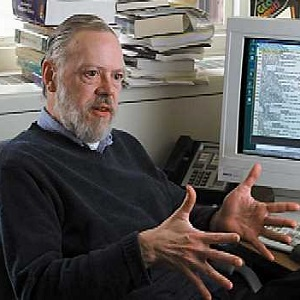

Java разработан в 1990–1996 годах канадским программистом Джеймсом Гослингом.
Java разработан в 1990–1996 годах канадским программистом Джеймсом Гослингом.
 Prolog разработан в 1972 году, автор - французский программист Ален Колмероэ.
Prolog разработан в 1972 году, автор - французский программист Ален Колмероэ.

Ruby
разработан в 1993-1995 годах, автор - японский программист Юкихиро Мацумото.

C разработан в 1969–1973 годах сотрудником Bell Labs Деннисом Ритчи.
 Python создан в 1989–1991 годах голландским программистом Гвидо ван Россумом.
Python создан в 1989–1991 годах голландским программистом Гвидо ван Россумом.